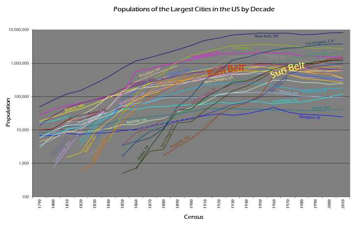
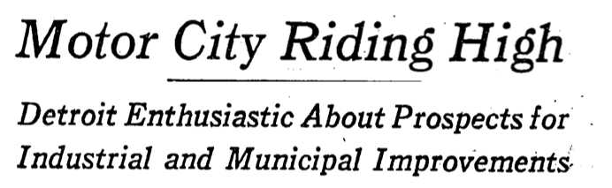

谢邀
正如这个问题的标签所写，这个问题，最好的答案应该由城市规划方面的专家来回答。（注，在评论中提到，真正城市规划者在此事里能起到的作用有限，所以，这里所说的城市规划，是一种广义的说法，基本上是政客眼中的政策制定过程，和作为专门工作的城市规划有相当距离。）
因为底特律今天的状况，正反映了美国城市规划者在过去半个多世纪以来，所犯下的诸多错误，和他们所面对的，艰难决择。
底特律所面对的问题，显然不只是这一座城市，而是美国在后工业化时代诸多城市的缩影。
这是美国大城市人口数量变化图：

可以看到，美国东部和中部的传统工业城市，在二十世纪上半叶，人口的增长已经开始放缓，到二战后，都不约而同的出现了人口的降低。就连纽约，也在这一时期出现了降低。这批城市，在图中用"锈带"（Rust Belt）来标出。
之所以被称为"锈带"，自然是指这些城市已经进入了后工业时期，传统工业开始走向衰败，像机器生了锈。在新英格兰地区，纺织业是当年第一个全面工业化的行业，但是也是自动化最早遭遇瓶颈的行业。在二十世纪初，就开始向劳动力更廉价的南方转移。像匹兹堡的钢铁行业，则在战后面临业生产设备老化，效率降低等问题，竞争力上就输给了战后新起的海外对手。
对于底特律，其支柱行业无疑是汽车。
汽车城在二战期间达到了颠峰。这时期因为战争的关系，在政府管治下，企业无法用加薪的方法吸揽工人。于是，美国企业开始大量了提供企业福利。其中，以通用汽车为首，创立了现代的企业养老金制度。大批公司还同时开始提供了医疗保险等福利。
在战后的冷战大环境下，美国的汽车行业和政府达成共识，到全力支持政府的冷战政策。这冷战的统一战线里，自然也包括了工会。1950年，汽车行业和工会达成了共识，就是"底特律协约"（Treaty of Detroit）。这份协议通过长约和肯定企业福利制度的方式换取工人不罚工，并允诺会随着经济发展调整工资。
由企业提供工人福利，是件不靠谱的事，其中最大的问题，莫过于养老金。毕竟，对于普通工人来说，养老是一个数十年后的事情。这对于一个企业来说，这么一大笔钱放在那里，决不可能只放在那里闲着，而一定要被拿来投资。这就要求企业有极其好的金融管理和风险评估能力，最重要的，是企业能正确的估计自身的发展，并以此来调整养老金计划。
美国的汽车行业就错误的评估了自己的未来。定下协约的 1950年代，依然是美国汽车业的黄金时代，条款必然相当大方。但到了 1960年代，竞争初起，汽车行业面临着成本等多方面的挑战。这时候，美国汽车行业做出的，是一个赌未来的决定：它们和工会约定，为了加强企业竞争力，延缓曾经允诺的工资上涨，而是把这部分回报延到未来的养老金里。也就是说，汽车行业借了一笔高利贷，放下了一个定时炸弹：它们只有不停的高速发展，保持自己的行业霸主地位，保持高利润，才能在这些工人退休时，支付的出这笔钱。
但事与愿违，美国汽车行业的霸主地位不在，这颗炸弹终于在经济衰退中爆炸。而美国政府也不得不出面救助，只因汽车行业已经成了美国最大的养老机构，如果不稳住它，整个社会都会出现动荡。（这次底特律宣布破产，直接触发点，据称也是有 35亿美元的养老金黑洞）。
伴随工业衰退的，自然是工作的消失。
工作的消失是多方面的。除了经济自身的原因，也有技术的发展。
比如，在和工会签下协议后，汽车行业想到的一件重要的事，就是去自动化流水线。因为在劳资谈判中最强势的，是执行最危险工作的工人，工厂在这些工人身上花得钱也最多。于是，汽车厂首先把这些风险位置用自动化的机器人替代掉了，并进一步的自动化其他环节，最终实现了效率增加，带来的，自然是大规模裁员。这一趋势，到了80 年代，在信息技术革命下，还在进一步加强。
与此同时，南方在罗斯福新政和二战军工企业大发展的情况下，终于尝到了工业化的好处，要发展自己的地方工业。他们开始解决自身的种族问题，通过廉价的资源和劳动力，以吸引大量北方工业南下。这样带来了南方城市人口的增长，就是上图中的"阳光带"（Sun Belt）。
可是，南方的黑人没有意识到这个趋势，依然在大规模北上。黑人的这一次北上始于二战。在黑人领袖的威胁下，罗斯福同意，政府机构，军工企业，在招工时不能有用工歧视。广大企业当然欢迎这个决定。于是黑人大量涌入北方和西部。到二战结束，底特律汽车工业所雇的黑人已占了总工人数的15%。
但随着整个工业的衰退，失业率开始上升，最晚入行也是最无技术无经验的工人，主要是黑人，被解雇，而依然源源涌入的南方黑人，也因为找不到工作，而被困在了城市了。与此同时，美国随着婴儿潮的到来，进入郊区化的发展时期。
郊区化实际上是伴随着城市的发展出现的。早在 19世纪上半叶，随着纽约的发展，大量买不起房的中产阶级就已经开始住到了布鲁克林，乃至新泽西。Union Ferry Company 的轮渡每天要接送 7 万人上下班，此外还有 10万人坐马车。与此同时，市中心工业区附近，住得就都是没钱的穷苦工人了。
现代郊区的概念，是二战后出现的（但也有人说，像福特在 1920年代在底特律郊区建了著名的 River Rouge厂区，已有早期郊区化的特征）。也是首先在纽约郊区，Levittown是第一个面向中产阶级而大规模兴建的卫星城。1950年代高速公路的兴建，加速了人口外迁的过程，也把城市分割成了一个个互不通气的区。慢慢的，城市里好区坏区的概念越发深入人心，就形成了穷人住城里，中产阶级白天上班，晚上离开的节奏。
就这样，支柱产业的困境和人口的逆向流动，让城市的发展限入衰退，"锈带"城市人口开始缩减。从1950 年到 2007 年，底特律人口缩减了 55%，同时期，圣路易斯人口缩减59%，克里夫兰55%，辛辛那提减了 41%，费城 30%，
人口大量迁出到郊区带来的不仅是城市税收的锐减，也让城市里出现了大量的废弃房屋。以底特律为例，2010年的调查表明，有 3.3 万户被遗弃的房屋，9 万块空地，占全部居住房的1/3。据估计，底特律城区总共有 4 到 5万被遗弃的建筑。这些被弃置的房屋，荒废的街道，就对城市的日常设施维护提出了巨大的挑战。
任何一个城市，一个地区，到一栋房屋，都有自己的运命。
1960 年美国的调查表明，有 1/5的居民用房处于破败的状态，需要更新。对于一个经济在不停扩张的城市，一个健康的房地产市场应该能够自己完成这个以新换旧的替代过程，保持城市的良性循环。当地方经济处于下坡路时，市场会放弃这些地方。美国中西部无数的鬼城，见证了一个个小城的兴衰。
但是，当衰退发生在一个大城市，人口密集地区时，人们无法一走了之，而是会选择如何挽救它。
这时候，城市的领导者，就要对城市的未来做出相应的规划。美国大举挽救后工业化城市的努力，大约也可以说从二战以后开始。
对于城市的领导者来说，他们面对几个选择。
一个是任其自然，让市场自己来解救自己。但是，对于民选官员来说，为了向选民交待，不作为不是一个选择。
一个是承认城市经济衰退的必然性，完成城市的转型。但是，对于民选官员来说，你很难向选民坦言这个城市已经荣光不再，他们需要面对现实，让他们投你的票。
还有一个就是要知难而上，立志要带领城市完成经济复兴。
美国在二战后就是这样一个状态：刚打赢了二战，美国人自信心爆棚，认为没有自己搞不定的困难。当时的整个经济还处于绝对的优势，美国人也不可能看到任何经济上的衰退。对于美国的领导者来说，城市所面临的问题，就是城市和郊区的竞争。
于是，1949年国会通过了《住房法案》（Housing Act），试图通过大规模的改造旧城区，来让城市恢复生命力，美名曰"城市续新"（urban renewal）。当时的社会理论认为，破败的城区本身是问题之源。有了破房子，才有了高犯罪率，影响了地方商业发展。如果能翻新这些旧房，就能让整个社区焕然一新，再建设高速公路，改善城市投资环境。
结果，在 1949 年到 1963 年这 14 年间，有 60万家庭从贫民窟里被迁出重新安置，其中，只有 1/3是白人家庭，联邦政府总共投入了超过 60 亿美元。
但是，理论错误，自然无法指望能有奇迹。整个工程从本质上就是把这些穷人来了个大搬家，从一个地方搬到了另一个地方。只有7%的家庭迁入了郊区，其他家庭只是换到了政府新建的公共房里。而本质问题，住房市场本身，依然照旧。新的住房也就缺少维护，迅速破败，变成新的贫民窟。同时，新清出来的地区，其投资环境没有本质改变，也就无法达到政府期待的重启城市经济的目的。
到 1960 年代中期，联邦政府的"城市控制"（city control）战略已经被人认定失败。郊区继续高歌猛进，市区进一步衰败。
这之后，联邦政府又执行了一系列的其他城市救助计划。即使到了里根时代，联邦政府虽砍掉了大量对地方的经费支持，在86 年，以及 90 年，还是推出了两个大型的建设项目。
但是，这些项目基本上可以用偶有亮点，整体失败来形容。一方面政府没有正确把握形势，选择最有效的策略，另一方面联邦政府各机构自己疏于沟通，和地方也一向缺少协调，很难保持长期持续的投入，自然造成大量的浪费。
到了 90年代，整个城市衰退的形势随着几个主要城市开始走出低谷变得清晰起来。
60年代出生的新一代开始进入社会，这些人中有相当一部分并不欣赏郊区大房子的生活。他们被城市里的文化生活和工作环境所吸引，选择重新搬回城市。于是有相当一部分城市开始复兴。
首当其冲的，是纽约和波士顿这样的地区。这些地方的经济并没有遭受实质性打击，城市所遭遇的衰退，其实是郊区化的趋势让投资被分流所造成的。而城市本身无论从商业还是文化生活，底蕴尤在，通过市场机制，自然的调节回来。一些破败地区，也就随着中产阶级的回归，开始了所谓的"中产化"（gentrification）的过程。像华盛顿特区这样的地方，因为中产化的加强，很多黑人已经无法支持日益上涨的房价，开始选择离开了。
除此之外，像丹佛，匹茨堡等城市，通过领导者的成功运作，完成了市中心的转型，建立了更具有可持续发展的商业环境。
相比起来，像底特律这样的城市，到了 60年代，领导者已经面对着一个重要决择：开始转型，还是相信自己的老路。
汽车城和它的几大汽车公司一道，选择了相信自己。
这是 1963 年《纽约时报》的头版标题：《汽车城高歌猛进》

州长乔治·罗姆尼（GeorgeRomney）在报导中说："今年春天虽然充满了严冬的寒意，底特律现在一丝忧虑也没有"。
是的，整个汽车城被这样一个乐观的态度所支持，它的发展计划也自然是按照不断前进的构想制定的。被人为延后的汽车工业崩盘，也人为的为底特律制造了一种期待。而这种前进的预想，一直支持了底特律几十年，最终不可收拾。
这种乐观气氛，可以参照附近另外一个被汽车工业重创的城市 Flint。直到 21世纪，Flint 的发展计划依然是 1965 年的计划。这个计划里，假想 Flint最终会达到 25 万居民。而实际，Flint 的人口，在 1960年就永远的达到了颠峰，20万人，然后开始下滑。随着通用汽车在 Flint 陆续裁掉 8万工人，Flint 的人口已经降至 10 万出头。到 2010 年，Flint才开始重新制定其发展计划。
相比起来，底特律的顾虑更大。即使进入到 90年代，汽车工业已开始步履为艰，城市领导者依然难以痛下决心调转方向。他们认为，底特律底蕴尤在。汽车工业为底特律提供了强大的技术支持，而 Motown 本身，也不缺文化沉淀，更有福特基金会这样资金雄厚的慈善机构一直致力于地方发展。这最近这些年，底特律市中心一些地区也不乏复兴趋势。像波士顿，华盛顿这样的地方，都花了三十年时间才扭转颓势，所以还要留给底特律足够时间，让它自己重新焕发青春。
这时候，来自欧洲的经验，突然开始冲击美国的决策者。
苏联解体，两德统一，东欧巨变。最明显的是东德，突然间，大批民众离开东德前往西德，东德的工业尽废。从一定程度上说，东德在短时间内，城市开始全面衰退。东德重镇莱比锡在10 年间人口减少 12%，从 1970 年到 2005 年，莱比锡的制造业从业人数减少90%。
与底特律这样的城市不同的是，东德城市没有什么可犹豫的，那里从政府到民众，都意识到大势所趋，无可挽回。于是，从上到下，开始了一次全面的城市瘦身运动（"shrinking cities"）。以莱比锡为例，就有计划的拆掉了大量废弃房屋，兴建绿地，集中力量，以教育，医疗等为重点，发展市中心地区。在进入21 世纪后，终于挽住颓势，经济开始复苏。
欧洲的相对成功，和锈带的持续衰退形成对比，让美国的不少城市规划者开始大力支持城市瘦身。他们认为，底特律这样的城市和纽约等城市完全不同，地方的支柱产业处于长期衰退已经无可挽回，不可能指望出现足够的新商业活动来完全替代正在消失传统制造业。要想让城市自然恢复，要等的可不是二三十年。所以，必须下定决心，主动瘦身，应能像欧洲那样，在短时间内完成重启。
2009年当选的底特律市长，前活塞队球星 Dave Bing 就承诺，要大刀阔斧的拆除上万间被弃置的房屋和相关道路，改建成绿地，甚至耕地。
但是，承诺只要张张嘴，要实现的难度，远比预想的要难。主要的阻力，有两个。
一个是钱。
这样的工程，当然要花很多钱，对于人口渐减，城市收入大幅下滑的市政府来说，经费本来已经捉襟见肘。改建成绿地，又不是什么商业投资，基本是个净投入。
另一方面，联邦政府和国会出于自身政绩需要，更希望能够直接增加就业的计划，就是兴建新的大型建设项目，也就更喜欢把钱花在经济蒸蒸日上的地区。最有效的瘦身，是要联邦和地方政府长期目标明确的通力合作，这对于喜欢各自为战的美国，也不大容易。
地方政府如何腾挪出钱来，就是个问题了。
另一个是居民。
城市瘦身，和选举不同。选举只要大部分人支持，而瘦身，清理一个地区，说白了就是拆迁，就要这个地区所有的地产所有者都同意。这个，在欧洲能够相当顺利的进行，需要一个强力的政府，而这，正是美国人所一贯害怕的。
支持瘦身者的重大胜利，是 2005 年高院在 Kelo v. New London 案上作出的判决：高院在 5-4 的判决中，认定地方政府可以为了公众利益而收回私有财产，既使地方政府所支持的项目并不一定能成功。
但是，对此判决的反对意见也相当大，而且，保守派和自由派都反应强烈。持反对意见的保守派大法官 Clarence Thomas 认为，拆迁这种行为对少数族裔，弱势群体是不公平的。Thomas 特别提到了 1981 年密歇根高院把底特律的 Pole town 地区强行征给通用汽车建工厂的行为。底特律人有很多自然也对当年这事愤愤不平，认为这是政府和汽车工业勾结的结果。
对于黑人来说，拆迁不可避免的和二战后联邦政府进行的"城市续新"中，大规模城市拆迁行为联系起来。早在1963 年，著名黑人作家，民权运动领袖 James Baldwin 就曾在电视采访中不客气的把城市拆迁计划比作种族清洗，清扫黑人。当 Dave Bing 重提拆迁时，同样的指责自然也重新冒了出来。
所以，虽然有了 Kelo 案判决在手，大部分锈带城市在瘦身时，更多的选择了土地银行（land bank）这样的形式来逐步完成改造。土地银行由政府或非盈利机构建立，有计划的把弃置的房屋和土地的所有权廉价收回，逐步成批的处理。土地银行并非是新事务。早在1971年，圣路易斯为了抑制城市衰退，就成立了第一个大型土地银行，后来几个锈带的大城都成立了自己的土地银行。像Flint 的土地银行就回收了上万家空房，拆毁了一千多家，重新开发了 2500家。但是，离解决城市问题还远远不够。
说到底，政治家在瘦身的同时，必须要给出一个令人信服的愿景，才能获得绝大部分选民的支持，选择把自己的房屋卖回给政府，让从联邦到民间组织都愿意为一个目标出钱出力。但这儿，在美国所遇到的阻力，自然远比欧洲要大。
美国的城市规划者，需要针对美国的每个城市，设计出创造性的拆毁重建方案，赢回民众的信心。
否则，底特律还会在鬼城的道路上，走上很长的一段时间。
本人对城市规划并不了解，相关内容多来自
Facing the Urban Challenge: Reimagining Land Use in America's Distressed Older Cities 和 T.J. Billitteri, Blighted Cities, CQ Researcher, Volume 20, Number 40,
Pages 941-964, Nov. 12, 2010